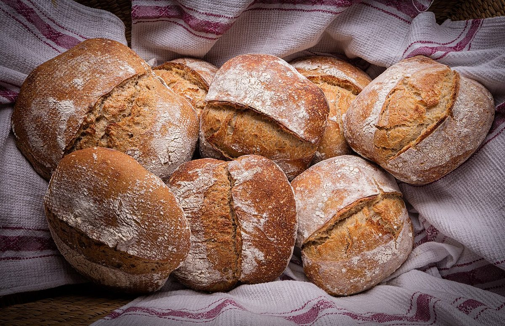
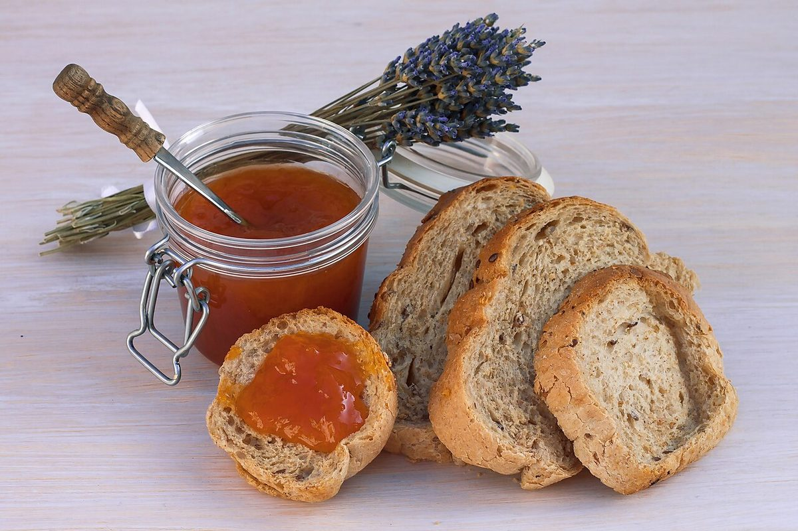
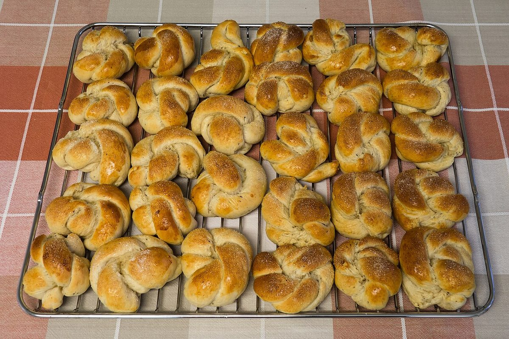

メニュー

掲載写真はフリー素材のイメージで、実際の店舗・商品ではありません。他地域で撮影されたものや撮影地が不明なものを含みます。
メニュー・価格は準備中です
メニュー・価格は準備中です(お問い合わせください)。詳しくはお電話またはInstagramでご確認ください。
ご案内の方法
- お電話でメニューについてのお問い合わせはお電話で。0898-53-2666
- Instagramで最新の情報の確認先としてご利用ください。instagram.com/sorahima6
イメージ写真
以下はパンのイメージ写真です。実際の商品ではありません。



お問い合わせはお電話かInstagramで
営業時間・メニューなどの詳細は準備中です。お出かけ前や、ご不明な点は、お電話またはInstagramでご確認ください。
このサイトにお問い合わせフォームはありません。